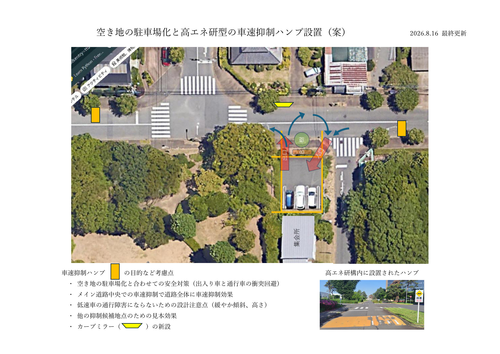

📜 これまでの経緯
- 2025年8月：集会所横の空き地について、気候変動対策も兼ねたソーラーカーポート案を提案
- 2025年8〜9月：夏の住民アンケートを実施。ソーラーカーポート案は賛成・反対が拮抗し、中長期の継続検討課題に。あわせて「速度制限標識の設置」も地域要望の一つとして挙がる
- 2025年9月：一気に太陽光発電まで進めるのは無理があると判断し、段階を踏む空き地利用についての短期対策案を提示
- 2026年8月（本ページ）：太陽光発電は反対意見を踏まえて見送り、駐車場としての整備に絞って再構成。あわせて、駐車場の安全対策とかねてからの速度抑制要望を踏まえ、車速抑制ハンプの設置案を新たに追加
🧠 概要
今年度中の合意形成を目指し、上記の経緯を踏まえて、①空き地の駐車場整備と、②あわせて検討中の安全対策（車速抑制ハンプ）の2つを提案します（まだ決定した内容ではありません）。
下の平面図（航空写真に加筆したもの）が現時点での案の全体像です。印刷用の資料（A4横）はこちらからダウンロードできます。
|
 図をクリックすると拡大表示されます。 |
{kind=link}
🅿️ ① 空き地の駐車場整備
単なる駐車場ではなく、街路樹の補植とベンチの設置もあわせて行いたいと考えています。当該箇所の街路樹は、以前はあったものが現在は失われているためです。
🚧 ② あわせて検討中の安全対策：車速抑制ハンプ
車速抑制ハンプの提案には2つの理由があります。1つは、駐車場化に伴う出入り車と通行車との衝突を防ぐための安全対策です。もう1つは、昨年度夏のアンケートの地域要望でも挙がっていた、メイン道路の速度抑制です。実際に、特定の車が毎朝若葉方面から猛スピードで狭い通りを通り抜けていくという報告があり、過去にもスピードの出し過ぎが原因と思われる交通事故が複数発生しています。速度制限標識の設置はまだ実現していませんが、標識だけでは徹底されない可能性もあることから、高エネルギー加速器研究機構（高エネ研）構内と同様の、より実効性が期待できる車速抑制ハンプをメイン道路に設置する案をあわせて検討しています。
ハンプの目的や設計にあたっての考慮点は以下の通りです。
- 空き地の駐車場化と合わせての安全対策（出入り車と通行車の衝突回避）
- かねてからの速度抑制要望への対応（標識だけでは徹底されない可能性を踏まえた、より実効性が期待できる対策）
- メイン道路中央での車速抑制で道路全体に車速抑制効果
- 低速車の通行障害にならないための設計注意点（緩やかな傾斜、高さ）
- 他の抑制候補地点のための見本効果
- カーブミラーの新設
📚 関連情報
| 共有情報の目次に戻る | トップページに戻る |